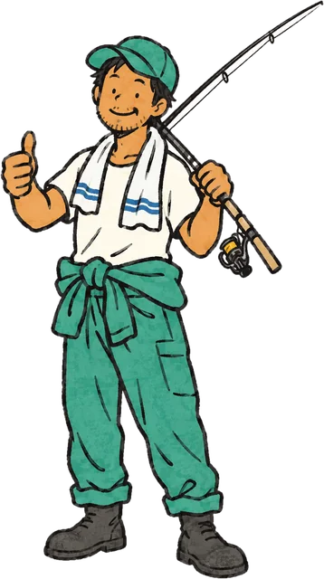

：勤務は実働8H。
自動車整備工場は西表島に2ヵ所。整備士といえば、実働8h＋長時間労働…というケースが多いですが、西表島交通では組織体制をしっかりと考え、各自のプライベート時間を確保できる！
青空交通グループは、1972年の設立から50年以上、西表島で観光と島の暮らしを支えてきました。
観光バスや遊覧船、レンタカー、お土産販売といった観光事業だけでなく、路線バス、スーパー、ガソリンスタンド、自動車整備、プロパンガス販売など、島で暮らすために欠かせないサービスも幅広く展開。
観光で訪れる人にも、島で暮らす人にも。島ぬ自然と暮らしを大切に、これからも西表島とともに歩んでいきます。
青い海、深い緑、聞こえてくるのは鳥や虫の声。ここは、沖縄・八重山諸島にある西表島。
島の約9割を亜熱帯の森が占め、マングローブが広がる川をカヌーで進んだり、手つかずの自然の中で生きものに出会ったり。
大自然のすぐ隣に、ちゃんと人の暮らしがある。
そんな、自然と暮らしがすぐそばにある島。それが、西表島。
そんな西表島の暮らしには、車やバスは欠かせない。必要不可欠の交通手段。
集落は島の沿岸部に点在し、日々の移動には距離がある。
通勤や通学、買い物はもちろん、仕事で人や荷物を運ぶときにも車が必要になる。
西表島では、車が「移動手段」ではなく、暮らしを動かすための大切な足になっています。
西表島の車を、まるごと整備する。
ここでは「この作業だけ」という分業はほとんどなく、点検から修理まで、基本は自分で車に触れていきます。
海風で車が錆びやすい西表島では、「ねじ一本外すのに一日」なんてことも？
大変な分、身につく知識も技術も幅広い。島の車を守りながら、整備士としての強みをつくっていけるお仕事です。
自動車整備工場は西表島に2ヵ所。整備士といえば、実働8h＋長時間労働…というケースが多いですが、西表島交通では組織体制をしっかりと考え、各自のプライベート時間を確保できる！
残業が全くないとは言えませんが、かなり少なめ。月に約1〜2時間、多くても5時間くらいなので、1日で計算するとほぼナシ！！役職によって異なりますが、通常の整備士の現場と比較するとその差は歴然です。
島では珍しい土日休みといったしっかりとしたお休みがあり、連休にしたい！などは相談ができる環境です。観光地なので、土日も営業したいところですが、しっかりお休みも取る文化アリ！
海風の影響で、車が錆びやすい西表島。だからこそ、防錆処理やガラス交換など、ここならではの塩害対策を経験できます。溶接や金属加工、修理まで幅広く挑戦できるのも魅力。
「今の環境を変えたい」「知らない場所で、新しい生活を始めたい」
そんな気持ちがあれば十分！
都会の便利さから少し離れて、経験よりも、「やってみたい」という気持ちを大切にしています。
西表島の魅力は、人との距離の近さと豊かな自然。休日は釣りやダイビング、山菜採りを楽しんでいます。「永住しよう」と気負わなくても大丈夫。まずは、この島で暮らしてみる。そんな気持ちで飛び込んでみてください！

この島でしか、なれない存在へ